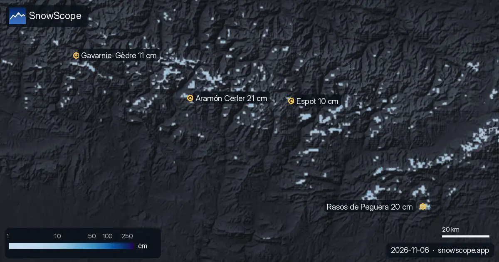

Snow reports · Snow vs past winters
Daily snow reports for skiers: where the snow is, what is coming and where to ski, from the SnowScope snow map and measuring stations. Every number comes from that day's data.

Is there more snow than a year ago? We compared today with 15 November last winter at 4 resorts in Western Canada: 2 of them have more snow now, …

2 of 4: that is how many resorts in the US Northeast are clearly above normal today. How does this winter look so far? We set today's snow at 4 …

As of 13 November, Killington's 12 cm is ahead of 42 past winters at this date; peak weeks typically arrive weeks 9, 11, and 10.

A single snowy week can flatter a season, so we weigh today's snow against many past winters in Western Canada. Is the snow store filling as usual? …


Wolf Creek measured 20 in (51 cm) on November 11, 2026, tracking 115% of normal while vastly outpacing last year's thin early start.

Wolf Creek's base sits at only 3 in (8 cm) while its summit holds 19 in (47 cm) on 11 November, a 15 in (39 cm) gap shaped by freezing level.

Is there more snow than a year ago? We compared today with 8 November last winter at 4 resorts in the Alps: 0 of them have more snow now, according …

0 cm at 2,052 m on 7 November, as in many past winters. Last winter peaked at 100.6 cm. Interactive chart and data.


We compared today's snow at 5 resorts in the US West with the same date in each of the past 46 winters. 3 of them are clearly above normal.

We compared today's snow at 4 resorts in the Pyrenees with the same date in each of the past 46 winters. 1 of them are clearly above normal.

On 4 November, Les Deux Alpes has 45 centimetres at the summit but zero at the base—an extreme early-season height gap.

We compared today's snow at 4 resorts in the Pyrenees with the same date in each of the past 46 winters. 1 of them are clearly above normal.